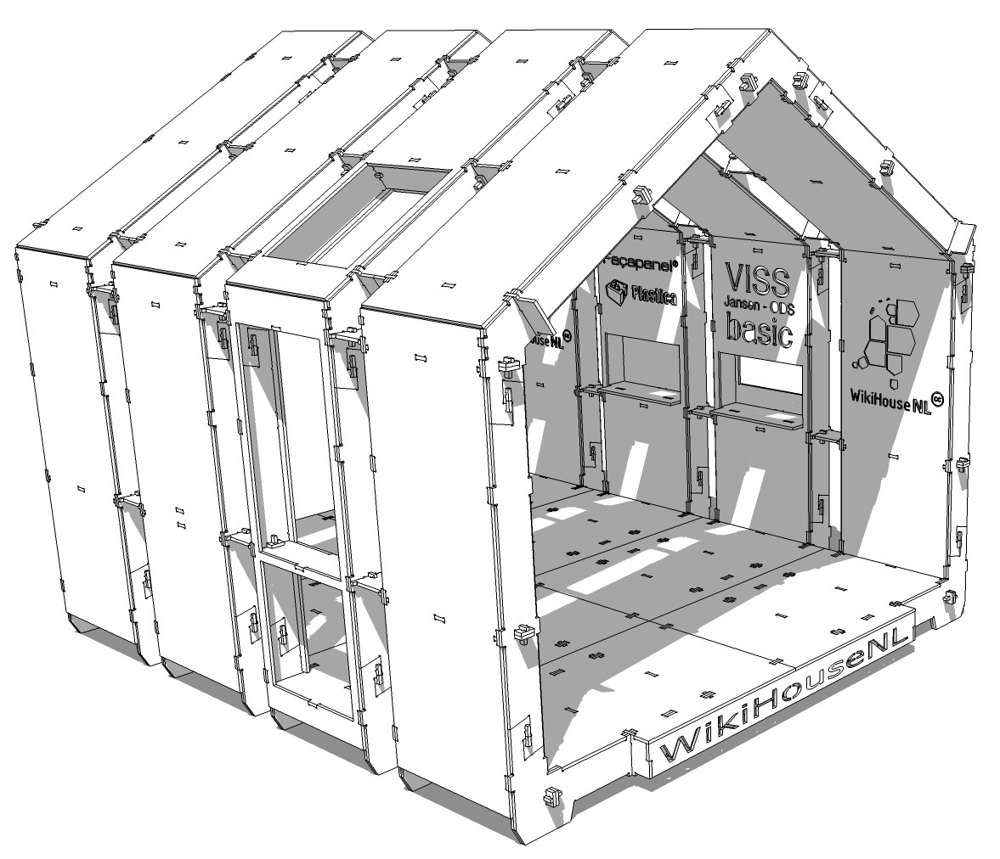

REAL BUILT EXHIBITION STAND · CC BY-SA 3.0
WikiHouseNL WikiStand2014
Source-authored and physically exhibited at real trade events. The complete design archive contains the original SketchUp 3D file, three CNC DXF drawing sets, dimension/concept/cutting PDF sheets, photos and licence. GLB is derived for web display and editing.
SKP original3 × DXF originals3 × PDFGLB converted 3DAttribution